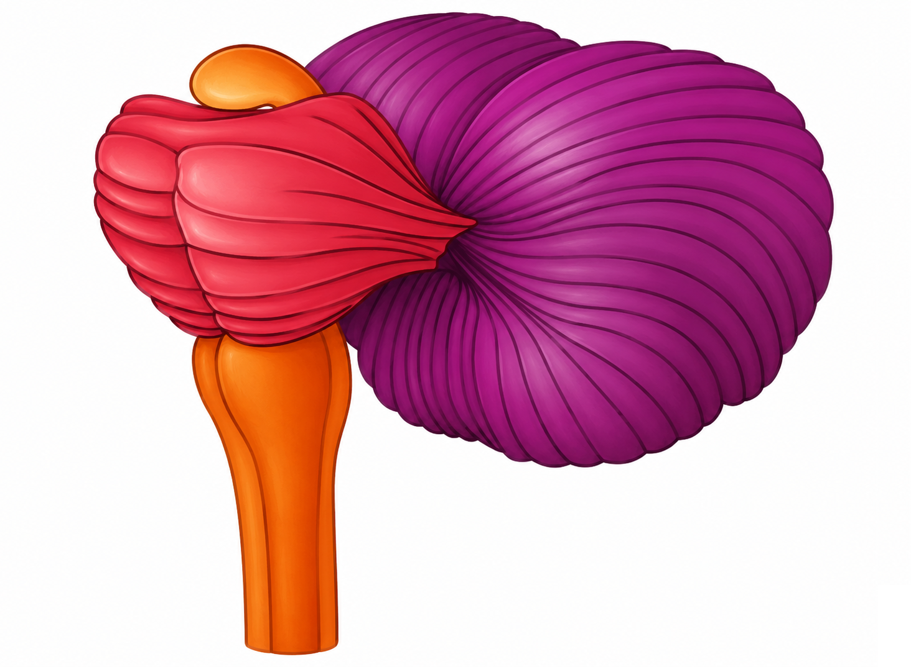

Lower brain region
Hindbrain
The hindbrain supports essential automatic functions and coordinated movement. Its structures help regulate survival functions, connect brain regions, and keep movement smooth and balanced.

Key Structures
Three areasMedulla
Location: Lowest portion of the brain, continuous with the spinal cord.
Main roles: Regulates vital automatic functions such as breathing, heart rate, blood pressure, and protective reflexes.
Real-life example: It keeps your breathing and heart rate functioning even while you are asleep.
Pons
Location: Above the medulla and in front of the cerebellum.
Main roles: Relays information between major brain regions and contributes to sleep, breathing, facial movement, and sensation.
Real-life example: It helps coordinate breathing and sleep-related activity throughout the night.
Cerebellum
Location: Behind the pons and medulla.
Main roles: Coordinates balance, posture, timing, and the accuracy of learned and voluntary movements.
Real-life example: It helps refine balance and movement while you learn to ride a bicycle.
Sources
NCBI Bookshelf — Neuroanatomy, Brainstem · NCBI Bookshelf — Neuroanatomy, Cerebellum